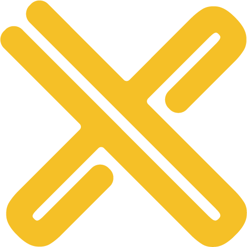

CookUnity
AI-Native Software Engineer
- Took multi-model AI code review to 500+ repositories: parallel reviewers, an arbiter, and ROI tracking in Mixpanel.
- Built the AI coding plugin marketplace: versioned, sandboxed plugins for Claude Code, Codex CLI, and OpenCode.
- Built an AI-assisted performance review platform (Next.js, Supabase, Slack), now running live HR pilots.
- Stood up a remote MCP server for AI agents and automated Ramp purchase orders across three 3PL pilots.
- Owned intake for 100+ AI enablement requests and set priorities across 12+ cross-functional AI projects.
- Built WholesaleWare's inventory reconciliation: roll-forward, variance, audited adjustments, multi-warehouse reports.